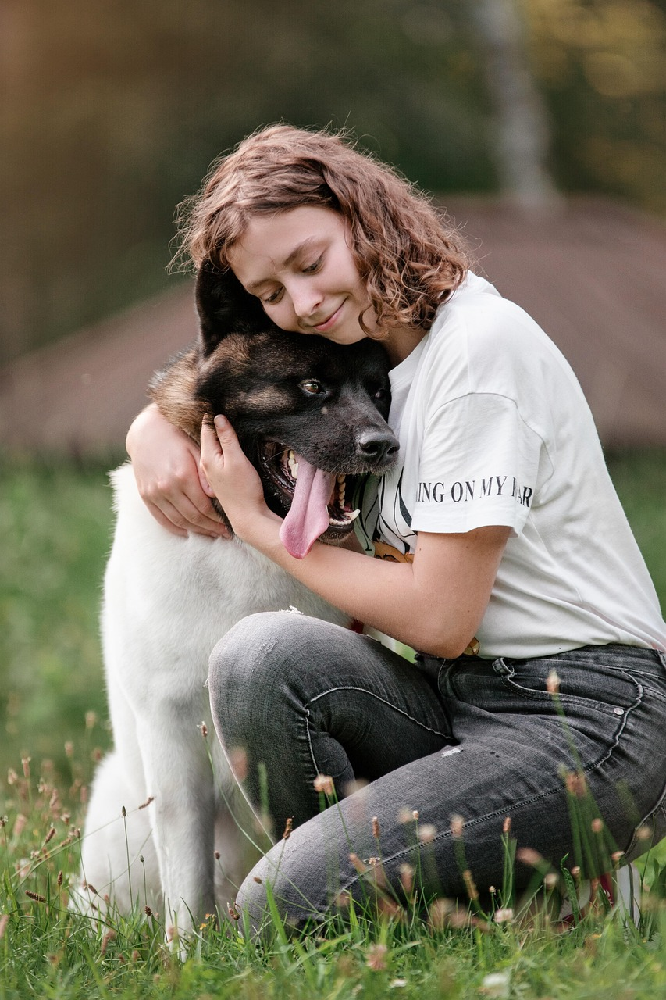
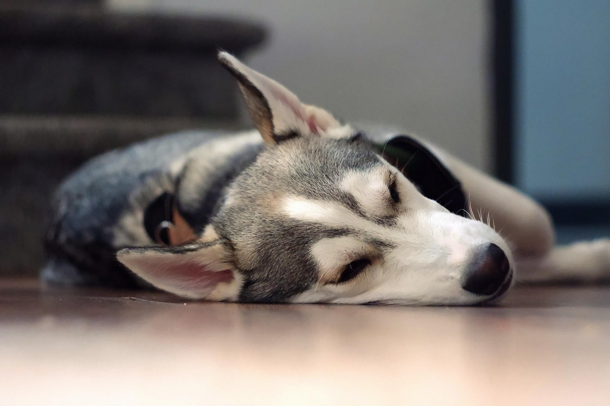
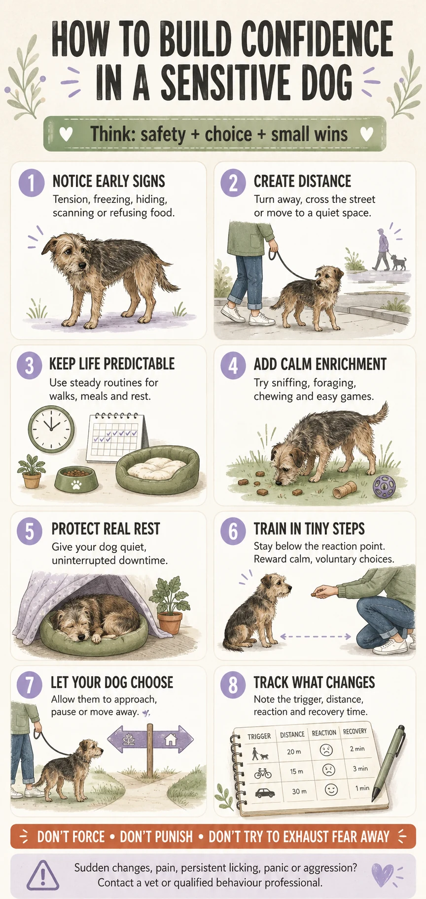
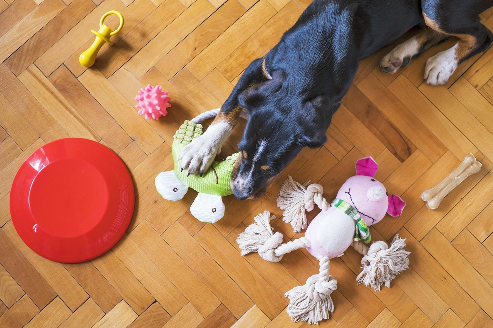
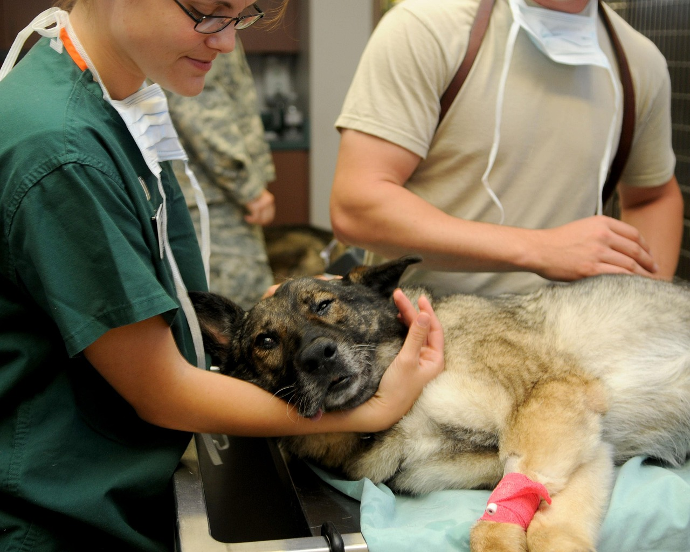

In 58 Swedish dog-owner pairs, owners with higher long-term hair cortisol tended to have dogs with higher hair cortisol. It is an association, not a proven cause.
Short answer: A 2019 study found that dogs and their owners had synchronized long-term hair cortisol levels: owners with higher hair cortisol tended to have dogs with higher hair cortisol. The pattern appeared in samples reflecting both summer and winter. However, the study was observational, involved only 58 female-owner-and-dog pairs from two herding breeds, and did not prove that an owner’s stress directly caused stress in the dog. The most useful message for owners is not “never feel stressed.” It is that the emotional climate, routines and interactions shared with a dog may form part of the dog’s long-term environment.
Have you ever returned from a difficult day and noticed that your dog seems unable to settle? Perhaps it follows you from room to room, scans the window, reacts more strongly on a walk or becomes unusually quiet.
It is tempting to say that the dog has “absorbed” your stress. Dogs are highly attentive to human movement, voice, routines and behaviour, so the idea feels plausible. But does scientific evidence support it?
Researchers at Linköping University investigated this question by measuring cortisol in the hair of dogs and their owners. Their findings suggest that long-term stress physiology can be synchronized within a dog-owner pair. The study is fascinating—but it is also easy to overinterpret.
Here is what the researchers found, what they did not prove and what dog owners can reasonably take from the results.
What does it mean when a dog’s stress is “synchronized” with its owner’s?
In this study, synchronization meant that owner and dog hair cortisol concentrations were statistically associated. When the owner’s hair cortisol was higher, the dog’s hair cortisol also tended to be higher.
It did not mean that the values were identical, that both experienced the same emotions at the same moment or that every stressful day immediately changed the dog’s hormones.
The researchers measured cortisol in hair rather than in a single blood or saliva sample. Cortisol becomes incorporated into growing hair, so hair cortisol concentration can provide a retrospective measure of cortisol exposure over a longer period. The proximal three centimetres of hair were analysed in this study.
This makes hair cortisol useful for studying long-term patterns. It does not function as a detailed diary. It cannot tell researchers exactly which event raised cortisol, whether the individual felt afraid, or whether a particular day was stressful.
Hair cortisol is a record of months, not of a bad afternoon. That is what makes it useful here, and what stops it from explaining any single day.
How was the study conducted?
The study included 58 dog-owner pairs in Sweden:
33 Shetland sheepdogs;
25 border collies;
31 female dogs and 27 male dogs;
26 pet dogs and 32 dogs that actively trained and competed in agility, obedience or both;
female owners only, with a mean age of approximately 46 years.
Hair was collected from the dogs and owners on two occasions: September or October 2017 and February 2018. These samples were intended to reflect cortisol exposure during preceding summer and winter months.
The owners also completed personality questionnaires about themselves and their dogs. Researchers collected information about routines, housing and training. Forty-four dogs wore an activity collar for one week so that the team could examine whether general physical activity might explain the hair cortisol results.
This design allowed the researchers to compare owner and dog cortisol across two seasons while considering breed, dog sex and lifestyle.
The main finding: owner and dog hair cortisol moved together
Owner hair cortisol was significantly associated with dog hair cortisol in both seasonal samples. In simple terms, dogs living with owners who had higher long-term cortisol also tended to show higher long-term cortisol themselves.
The relationship appeared in pet dogs as well as dogs involved in competition. During the summer sampling period, the association was stronger among competing dogs and among female dogs, although synchronization was still observed across the tested groups.
The authors suggested that dogs may mirror the long-term stress levels of their owners. That interpretation was supported by another part of the analysis: owner personality measures were associated with dog hair cortisol, while the measured dog personality traits had relatively little association with it.
However, “the dog mirrors the owner” remains an interpretation—not proof of a one-way biological transfer.
Physical activity did not explain the pattern—but that result has limits
The researchers found no significant relationship between dog hair cortisol and either:
the amount of medium-to-high activity recorded by the activity collar; or
the number of weekly training sessions reported by owners.
This matters because cortisol can be influenced by physical activity. The results suggest that the owner-dog association was not simply a case of active owners having active dogs with higher cortisol.
Still, the activity monitoring covered only one week and involved 44 dogs, while hair cortisol represented a much longer period. The study therefore cannot rule out every possible contribution from exercise, competition or shared daily activity.
Owners should not conclude that exercise is irrelevant to stress or that more exercise will solve chronic stress. This study did not test either claim.
Owner personality was related to dog cortisol—but not in a simple way
The owners completed a Big Five personality questionnaire. Three traits—neuroticism, conscientiousness and openness—were statistically associated with dog hair cortisol in parts of the analysis.
These results are easy to turn into misleading headlines. For example, a reader might assume that a more neurotic owner automatically produces a more stressed dog. That is not what the data showed. Higher owner neuroticism was actually associated with lower dog hair cortisol in both seasonal samples. Conscientiousness and openness were positively associated with dog hair cortisol only in the winter sample, and several associations differed according to the dog’s sex.
Personality traits are broad questionnaire measures, not diagnoses or moral judgments. The study did not establish which daily behaviours connected these traits with dog cortisol. The results should therefore generate further questions, not personality-based rules for choosing or raising a dog.
Season, breed, sex and lifestyle also mattered
The dogs had higher hair cortisol in the winter sample than in the summer sample. This seasonal increase was more pronounced among pet dogs than competition dogs. Shetland sheepdogs had higher winter hair cortisol than border collies, and female dogs had higher cortisol than male dogs when both sampling periods were considered together.
These findings show why cortisol should not be interpreted in isolation. A hormone measurement can vary with biological and environmental factors that do not have one obvious emotional meaning.
Higher cortisol is not automatically proof that a dog is frightened, unhappy or poorly cared for. Cortisol helps the body respond to demands and is part of normal physiology. Context, behaviour, health and change over time all matter.
Does this prove that a stressed owner makes their dog stressed?
No. The study found an association, not a demonstrated causal pathway.
Several explanations remain possible:
Dogs may respond to their owner’s behaviour, voice, movement, attention or routines.
Owners and dogs may react to the same household events or environmental pressures.
The dog’s behaviour may influence the owner’s stress as well as the reverse.
Lifestyle or relationship characteristics not fully measured in the study may affect both individuals.
Some combination of these processes may operate over time.
The researchers argued that owner-to-dog influence was more likely because owner characteristics were more strongly associated with dog cortisol than dog personality was. That is a reasonable interpretation of the results, but the study was not designed to establish direction with certainty.
It also did not test whether dogs smell human cortisol, whether a dog consciously understands that an owner is stressed or which human signals might produce the synchronization.

An association runs in both directions until an experiment separates them. The dog watching you all evening is also part of your evening.
What should dog owners do with this information?
The study did not test a training or stress-reduction programme. The following points are therefore practical implications, not interventions proven by this experiment.
1. Do not turn the finding into guilt
Every owner experiences stress. A difficult week at work does not mean that you have harmed your dog, and trying to appear perfectly calm at all times is unrealistic.
Instead, think about what your dog repeatedly experiences: sudden schedule changes, tense handling, hurried walks, frequent conflict, poor sleep or an unpredictable household may matter more than one bad mood.
2. Make daily life understandable
Predictable meals, walks, rest periods and household rules can reduce uncertainty. Predictability does not require a rigid minute-by-minute schedule. It means the dog has reliable patterns and receives clear information about what happens next.
3. Check your body before a difficult situation
Before passing another dog, greeting a visitor or entering a busy environment, notice your grip on the leash, breathing, posture and speed. Owners often shorten a leash or hold their breath in anticipation of a reaction. The dog may respond to those changes even if no words are spoken.
Use the space available, soften the leash where safety allows and follow a rehearsed plan. The goal is not to pretend that you feel nothing. It is to make your actions consistent and useful.
4. Watch the dog rather than guessing from your own feelings
If you are anxious, you may expect the dog to be anxious too. Look for observable evidence: body tension, orientation, willingness to eat, ability to sniff, response to familiar cues and recovery time.
This prevents two opposite mistakes—overlooking a dog that is struggling and assuming a relaxed dog must be stressed because the owner is stressed.
5. Protect recovery after demanding events
A busy trip, competition, visitor or difficult walk may be followed by a simpler day with sleep, sniffing and familiar activities. Recovery is not the same as isolation. It means reducing unnecessary demands and allowing the dog’s arousal to return to its usual level.
6. Address stress on both sides of the leash
If walks repeatedly leave both dog and owner distressed, the solution may involve environmental management, reward-based behaviour support and help for the owner—not simply more obedience practice for the dog.
A veterinarian can rule out pain or illness that may change behaviour. A qualified reward-based behaviour professional can help design safer exposure and handling plans. Owners may also benefit from practical support that makes care easier and more sustainable.
Important limitations of the research
This study provides evidence of long-term physiological synchronization, but its scope was narrow:
Only 58 pairs participated.
Every owner was female.
Only border collies and Shetland sheepdogs were included.
Participants were recruited through social media and personal contacts rather than randomly selected.
The design was observational, so it could not establish causation or direction.
Owners rated both their own and their dog’s personality, creating a risk of questionnaire bias.
Activity was monitored for one week in a subset of dogs, while hair cortisol reflected a longer period.
Hair cortisol measures cumulative hormone exposure; it does not identify a specific emotion or stressful event.
The results should not be automatically generalized to male owners, children, other breeds, multi-person households or dogs living under very different conditions.
Frequently asked questions
Can dogs sense when their owners are stressed?
Dogs can respond to many human cues, but this study did not identify which cues were involved. It showed that long-term hair cortisol levels were associated within the tested dog-owner pairs.
Do dogs absorb their owner’s cortisol?
The study did not show cortisol physically transferring from a person to a dog. “Synchronization” describes a statistical relationship between their measurements, not hormone absorption.
Does having anxiety make someone a bad dog owner?
No. The study did not assess whether owners were good or bad, and its personality results were complex. Higher neuroticism scores were associated with lower dog hair cortisol in this sample.
Can exercise break the stress connection?
The study found no significant association between dog hair cortisol and measured activity or reported training frequency. It did not test exercise as a treatment, so the result cannot tell owners how much exercise an individual dog needs.
Are female dogs more affected by owner stress?
The owner-dog cortisol association was stronger in female dogs during the summer sampling period, and female dogs had higher hair cortisol overall. One modest study is not enough to create a general rule for all female dogs.
Can a dog also affect the owner’s stress?
Possibly. Dogs and owners share routines and influence each other’s behaviour. This study’s authors proposed that dogs were mainly mirroring owners, but the observational design could not prove that influence moved in only one direction.
The most important thing to remember
Your dog does not need you to be emotionally perfect. It needs a life in which your signals, routines and responses are safe enough to understand.
The study’s most useful message is not “your stress is hurting your dog.” It is that a dog-owner relationship is a shared biological and social environment. Looking after that environment—through predictable care, calmer handling, adequate recovery and appropriate professional help—may support both members of the pair.
The study
Sundman, A.-S., Van Poucke, E., Svensson Holm, A.-C., Faresjö, Å., Theodorsson, E., Jensen, P. & Roth, L. S. V. (2019). Long-term stress levels are synchronized in dogs and their owners. Scientific Reports, 9, 7391. Read the paper →
Scientific note: Hair cortisol is a long-term physiological measure, not a diagnosis of anxiety or a direct reading of emotional experience. Behavioural changes should be interpreted in context, and sudden or serious changes warrant veterinary assessment.
How Do You Build Confidence in a Sensitive or Timid Dog?
林怡馨 · 25 August 2026 · 10 min read
A timid dog does not become braver by being exhausted, ignored or forced to face its fears. Ten principles, from reading the early signals to managed exposure.
Short answer: A sensitive or timid dog does not become confident by being exhausted, ignored, overprotected or forced to “face its fears.” Confidence grows when the dog feels physically well, can predict what will happen, has safe ways to move away, succeeds at manageable challenges and is rewarded for voluntary, useful behaviour. Owners should combine appropriate exercise, enrichment, rest, gradual exposure and reward-based training—and seek veterinary help when behaviour changes suddenly or seriously affects daily life.
If your dog hides when visitors arrive, startles at small noises or watches unfamiliar people from behind your legs, you may feel that every decision matters. Should you comfort the dog or ignore it? Avoid difficult situations or encourage it to be brave? Provide more exercise or more rest?
The answer is rarely “always” or “never.” The following ten principles turn the idea of “building confidence” into practical decisions an owner can use at home and outside.
1. “Sensitive” describes a pattern—it does not diagnose the problem
Researchers have developed a questionnaire to investigate a possible canine personality trait called sensory processing sensitivity. That makes sensitivity a real subject of study, but “highly sensitive dog” is not a veterinary diagnosis.
Dogs that look sensitive may be experiencing very different things:
fear of unfamiliar people, dogs, sounds or places;
high arousal or frustration;
discomfort with handling;
separation-related distress;
pain, itching or another medical condition;
limited experience with a particular environment;
a learned expectation that something unpleasant will happen.
Do not begin with “What kind of dog is this?” Begin with “What happened, in what context, and what did my dog do?” A dog that avoids hands but happily explores a new park needs a different plan from a dog that is constantly vigilant everywhere.
What to do: Keep a simple record for one or two weeks. Note the trigger, distance, time, location, first body-language change, full reaction and recovery time. Patterns are more useful than labels.
2. Learn the early signs—before barking, fleeing or biting
Sensitive dogs often communicate discomfort before producing the behaviour people notice. Possible early signs include:
turning the head or moving weight away;
lowering the body or trying to make it smaller;
becoming suddenly still or tense;
scanning the surroundings and struggling to disengage;
ears held back or a lowered tail;
moving behind the owner or toward an exit;
refusing food the dog normally likes;
panting without heat or recent exercise;
trembling, increased salivation, growling or barking.
No individual signal proves anxiety. A dog may lick its lips because food is nearby, yawn because it is tired or pant because it is hot. Ear and tail positions also differ among breeds. Look for several changes together and compare them with your dog’s normal behaviour.
What to do: Respond to the first small signal. Turn away, cross the street, ask a visitor to stop approaching or give the dog access to a quiet room. Waiting for an explosion makes both safety and learning harder.
3. Repeated licking or chewing is not automatically “self-soothing”
Some dogs lick themselves more during stress, but frequent or focused licking can also be caused by allergies, skin disease, infection, gastrointestinal discomfort, neurological disease or pain. Reviews of canine behavioural medicine warn that repetitive licking and chewing may be incorrectly labelled as compulsive or emotional before medical causes are investigated.
The same caution applies to a sudden increase in hiding, irritability, noise sensitivity, touch sensitivity or aggression. Pain can lower a dog’s tolerance and make previously manageable situations difficult.
What to do: Arrange a veterinary assessment if the behaviour is new, persistent, directed repeatedly at one body area or accompanied by skin changes, altered movement, sleep disruption, appetite changes or unusual sensitivity to touch. Take photos or videos and note when the behaviour occurs.
4. Separation anxiety is a specific problem, not a personality type
A dog that follows its owner around the house is not necessarily suffering from separation anxiety. Veterinary guidance notes that close attachment behaviour alone does not place a dog at greater risk.
Separation-related distress occurs specifically when the dog is alone or separated from an attachment figure. Signs may include vocalising, pacing, salivating, house-soiling, destroying doors or windows, refusing food and being unable to settle. Many affected dogs show their strongest signs within the first 15–30 minutes after departure, although patterns vary.
What to do: Record the dog after you leave. Video helps distinguish separation distress from boredom, reactions to outdoor sounds, confinement anxiety and incomplete house-training. If the dog panics, consult a veterinarian or qualified behaviour professional; repeatedly leaving it to “cry it out” is not a confidence exercise.
5. Meet exercise needs—but do not try to exhaust fear out of the dog
Physical activity supports health and can provide exploration, play and social contact. But “a tired dog is a good dog” is incomplete advice. Exercise does not directly treat fear, and repeatedly using intense running, chasing or high-arousal play may leave some dogs more activated rather than settled. Exercise also needs to match age, breed, fitness, health and temperature.
For a timid dog, a busy one-hour walk can contain far more stress than a shorter walk in a quiet place. Distance covered is not the only measure of a worthwhile outing.
What to do: Choose activity the dog can enjoy without being repeatedly overwhelmed. Combine physical movement with opportunities to sniff and explore. If the dog returns home frantic, remains vigilant for hours or reacts more strongly later in the day, reduce the intensity or complexity and observe whether recovery improves.

Rest is not the gap between activities. For a dog that spends its day monitoring the room, it is the activity.
6. Mental enrichment and rest matter as much as movement
Confidence is not built only outdoors. Environmental enrichment gives dogs appropriate ways to forage, sniff, chew, explore, play and solve problems. Research suggests enrichment can increase relaxation and reduce some alert or stress-related behaviours, although the best activity depends on the individual dog.
More stimulation is not always better. A timid dog also needs genuine downtime. Constant visitors, daycare, dog parks, training classes and puzzle toys can create a life with no opportunity to switch off.
What to do: Offer a small menu rather than a packed schedule:
scatter part of a meal in grass or on a snuffle mat;
allow unhurried sniffing on a quiet walk;
provide a safe chew suitable for the dog;
teach an easy search game;
offer gentle play if the dog initiates it;
protect a quiet sleeping area from children, visitors and other pets.
Watch what happens afterward. An activity is useful enrichment only if it benefits that dog rather than causing frustration or prolonged arousal.
7. Provide predictability without controlling every moment
Predictable routines can help a dog understand when eating, walking, resting and interaction are likely to occur. Clear household rules also reduce confusion. This does not mean the owner must become a dominant “leader,” nor that the dog should have no choices.
Confidence grows through controllable, successful experiences. A dog that can choose whether to approach a new object, enter a room or interact with a visitor receives useful information: its actions affect what happens next.
What to do: Keep the basic routine understandable, then build small choices into it. Let the dog choose between two resting places, select a direction on a safe sniffing walk or decline optional petting. Teach practical cues such as going to a mat, turning away with you and touching your hand. These give the dog familiar actions to use when uncertain.
8. Avoid both overprotection and forced exposure
Avoiding every unfamiliar sight forever can reduce opportunities to learn. But placing a frightened dog close to a trigger and preventing escape—often called flooding—can intensify fear and create dangerous attempts to flee or defend itself.
The useful middle ground is managed, gradual exposure. Present the trigger at a level where the dog notices it but can still eat, sniff, move normally and turn away. Pair the experience with something the dog values, and stop before the dog becomes overwhelmed.
What to do: If your dog fears strangers, do not ask strangers to reach toward it. Begin where the dog can observe without freezing or barking. Each time a person appears, provide a valued reward. Increase difficulty only after repeated relaxed responses. The goal may be calm neutrality, not physical contact.
Avoiding an uncontrolled encounter today is not “giving in.” Management prevents frightening rehearsals while you create better learning opportunities.
9. Reduce pressure and reward the behaviour you want
Shouting, leash corrections, forced handling and intimidation may stop movement temporarily without changing the underlying fear. Research comparing companion-dog training methods has associated aversive-based training with more stress-related behaviour and a more negative cognitive bias.
Reward-based training does not mean allowing dangerous behaviour. It means arranging the environment, preventing avoidable failures and teaching an alternative the dog can perform.
What to do: Break the skill into a step the dog can succeed at:
reward looking at a trigger and then looking away;
teach a cheerful turn-and-leave cue before it is needed;
reward four paws on the floor rather than punishing jumping;
teach the dog to rest on a mat while visitors remain at a distance;
practise collar touches or grooming in tiny, voluntary steps.
Use food, toys, play, sniffing or access to space according to what the dog values at that moment. If it cannot take a normally desirable reward, the task may be too difficult.
10. Calm support is different from anxious overattention
Owners are sometimes told to ignore a frightened dog because comfort will “reward the fear.” Fear is an emotional state, not a trick deliberately performed for payment. There is no good reason to withhold safe social support from a dog that seeks it.
That does not mean restraining the dog, repeatedly touching it when it is trying to move away or becoming loud and frantic. Some dogs want contact; others need space. During fireworks, owner-report research found that feeding or playing after loud bangs was associated with improvement, while counterconditioning was among the most successful reported training approaches.
What to do: Stay calm and available. If the dog approaches for contact, offer gentle touch if its body remains loose and it can leave. If it hides, make the hiding place safe instead of pulling it out. Pair manageable triggers with food or play when the dog is able to engage. Your attention should make the situation clearer, not more intense.

The ten sections above, on one card. Save it, print it, put it on the fridge.
A simple weekly confidence plan for owners
Confidence work should be small enough to repeat. A practical week might contain:
Area
Owner action
Health
Record any physical or behavioural change and arrange veterinary care when indicated.
Exercise
Provide suitable movement without exhausting or repeatedly overwhelming the dog.
Enrichment
Offer sniffing, foraging, chewing, play or simple problem-solving according to preference.
Rest
Protect predictable, uninterrupted downtime.
Training
Practise one easy skill in brief reward-based sessions.
Exposure
Arrange one or two controlled experiences below the dog’s reaction threshold.
Choice
Give the dog safe opportunities to approach, pause or move away.
Tracking
Note reaction intensity, required distance and recovery time.
Do not increase every category at once. If the dog has had a difficult outing, the next useful step may be recovery rather than another challenge.
How do you know whether confidence is improving?
Do not measure progress only by the absence of barking. A dog may become silent while still frightened. Look for functional changes:
the dog notices a trigger without becoming rigid;
it can turn away or respond to a familiar cue;
it accepts food and explores the environment;
it chooses to approach and can also leave;
reactions become less frequent, shorter or less intense;
recovery becomes faster;
normal resting and sleeping return sooner after a difficult event.
Progress is rarely linear. Compare weeks rather than individual moments.
When does a sensitive dog need professional help?
Contact a veterinarian when behaviour changes suddenly, self-licking or chewing persists, touch seems painful, sleep or appetite changes, or an older dog develops new fearfulness. Seek qualified behavioural help when the dog has bitten, is at risk of escaping, cannot manage ordinary daily activities, panics when left alone or continues to deteriorate despite careful management.
For severe anxiety, veterinary medication may be part of humane treatment. Medication does not replace learning, but it may reduce distress enough for a dog to benefit from behaviour modification.
The most important thing to remember
A timid dog does not need a harder owner or a life with no boundaries. It needs an owner who can tell the difference between protection and avoidance, between exercise and overstimulation, and between quiet behaviour and genuine relaxation.
Confidence is not the ability to tolerate anything. It is the growing ability to explore, make safe choices, use learned skills and recover when the world becomes difficult.
Scientific note: Behaviour must be interpreted in context. “Sensitive” and “timid” are descriptions, not diagnoses, and the advice above cannot identify the cause of an individual dog’s behaviour. Medical problems, serious fear, aggression and separation distress require individualized assessment.
Many dogs can enjoy training when it is predictable, voluntary and reward-based. Obeying is not the same as enjoying, and six popular training rules need a correction.
Short answer: Many dogs can enjoy training when it is predictable, voluntary and reward-based. But training is not automatically fun just because a dog obeys. A dog is more likely to have a positive experience when it understands how to succeed, earns something it genuinely values and can pause or move away without being forced.
Picture the moment you pick up a treat pouch. Your dog trots over, watches your hands and starts offering every trick it knows. That certainly looks like enthusiasm. Now picture a dog that turns its head away, moves slowly or stops taking food while its person repeats a cue more loudly. Both dogs are being “trained,” but they are probably not having the same experience.
Popular advice often reduces dog training to a few simple rules: be the leader, use hand movements, ignore mistakes, stay calm, teach patience and reward obedience. Each idea contains a useful question—but several need an important scientific correction.
Popular claim
A more accurate version
Dogs need an “alpha” who sets rules.
Dogs benefit from clear, predictable learning conditions; they do not need humans to act like pack leaders.
Dogs understand actions better than words.
Dogs can learn verbal and visual cues, and many respond very well to gestures. A hand signal is not the same as physically moving the dog.
Ignoring a mistake works better than scolding.
Avoiding intimidation is wise, but ignoring only changes some attention-seeking behaviours. Dogs still need to be shown and rewarded for an alternative.
A calm person makes a dog learn faster.
Dogs are sensitive to human stress and emotion. Calm, predictable handling may make learning easier, but it does not guarantee faster learning.
Teaching “wait” creates self-control.
Dogs can learn to delay a reward, but the skill develops gradually and may not transfer automatically to every situation.
Training creates love.
Kind, cooperative training can support a good relationship. Obedience by itself is not proof of love or trust.
How can we tell whether a dog enjoys training?
Scientists cannot ask a dog to rate a lesson. Instead, they combine behavioural and physiological clues. A dog that repeatedly chooses to return, approaches readily, takes rewards gently and shows loose, engaged body language is giving encouraging signals. Offering behaviours before being prompted may also show that the dog expects an opportunity to earn a reward.
No single sign proves enjoyment. A wagging tail can accompany excitement, uncertainty or tension, and eating food does not always mean a dog feels relaxed. Look at the whole dog and the pattern across the session.
Possible signs that the task has become too difficult or unpleasant include moving away, freezing, crouching, repeated lip-licking or yawning outside their usual context, a tucked tail, refusal of normally valued food, frantic grabbing or a sudden loss of attention. When these appear, make the task easier, change the environment or stop. Continuing until the dog “gives in” tests endurance, not understanding.
Do dogs need strict rules and an “alpha”?
Dogs do benefit from consistency, but not because they are waiting for a human “alpha.” The pack-leader story is a poor model for the relationship between a pet dog and a person. In training, consistency simply makes consequences easier to predict.
If “down” sometimes means lie on the floor, sometimes means get off the sofa and sometimes means stop jumping, the sound is unreliable. If jumping earns attention on Monday but punishment on Tuesday, the outcome is equally unclear. A more useful rule is: use one distinct cue for one behaviour, arrange situations so the dog can succeed, and reward the response you want.
Predictability should not mean rigidity. Puppies, older dogs and dogs in distracting or frightening environments may need different expectations. A dog that cannot respond may be confused, afraid, in pain or simply insufficiently trained for that setting—not stubborn or dominant.
Do dogs understand gestures better than words?
Dogs are skilled readers of human bodies. Research with trained dogs shows that they can respond to both spoken and gestural signals, and in some tasks gestures are especially effective. That does not mean every dog naturally understands every hand movement. A cue becomes meaningful through learning, and an unintentional lean, glance or hand movement can become part of the signal without the trainer noticing.
Most importantly, “add an action” should mean use a clear visual cue, not place the dog’s body into position. Lifting a paw to teach “shake” or pressing a dog’s back to teach “wait” may cause discomfort, resistance or confusion. It also fails to tell the dog which voluntary action earned the reward.
A clearer approach is to capture a behaviour the dog offers naturally, lure it without force, or reward small steps toward the final behaviour. Mark the correct moment with a consistent word such as “yes” or a click, then deliver the reward. Add the spoken or hand cue once the dog is reliably performing the action.

A reward is whatever this particular dog wants right now. It is not a fixed list, and it is not always food.
Is ignoring a mistake better than scolding?
Scolding can interrupt behaviour, but interruption is not the same as teaching. Studies comparing training methods have linked aversive-based training with more stress-related behaviour, higher post-training cortisol and a more pessimistic response in a cognitive-bias test. Reward-based training is therefore the safer default for welfare.
Ignoring, however, is not a universal lesson. It can reduce a behaviour that is maintained by your attention—for example, some forms of jumping or pawing—if attention disappears every time and an appropriate alternative is rewarded. It will not reliably teach a dog what to do instead. Nor should fear, pain or distress be treated as misbehaviour that must be ignored.
For ordinary mistakes, give useful information: prevent another repetition, lower the difficulty, cue or wait for an achievable alternative, and reward it. If a dog jumps during greetings, for example, create enough distance for four paws to remain on the floor and reward that position. The lesson becomes “this works,” rather than “sometimes my person disappears.”
Does a calmer trainer help a dog learn?
Probably—but the evidence is more nuanced than “stay calm and your dog will learn faster.” Dogs can discriminate human stress odour, studies have reported emotional contagion between people and dogs, and long-term cortisol levels can covary within dog–owner pairs. These findings show that human state can become part of a dog’s environment. They do not prove that a soft voice alone accelerates every lesson.
In practice, calmness matters because frustration changes timing, posture, leash pressure and the number of repeated cues. If you feel irritation rising, pause. Give the dog water, movement or rest, and return later with an easier step. A short successful session teaches more than a long contest.
Does teaching “wait” improve self-control?
Dogs can delay an immediate reward to obtain a better one, although performance differs among individuals and across tasks. Research also warns against treating “self-control” as one single, stable ability: a dog’s result on one inhibitory-control test may not predict its result on another.
That makes “wait” a useful practical skill, but not a personality transplant. Teach it in tiny increments. Ask for a fraction of a second, mark success and release the dog to the reward. Increase only one difficulty at a time: duration, distance or distraction. Frequent failure means the step is too hard.
The release cue matters as much as the wait cue. It tells the dog exactly when the pause ends, making the exercise predictable. Do not repeatedly display food while preventing access until the dog becomes frantic; that rehearses frustration rather than calm waiting.
Can training strengthen the dog–human bond?
It can, depending on how training is conducted. Reward-based sessions create repeated opportunities for clear communication and positive outcomes. An observational study in dog-training classes found fewer stress-related behaviours and more attention toward owners in dogs trained with positive reinforcement than in dogs trained with negative reinforcement. Because the study was observational, it shows an association rather than proving that the method alone caused every difference.
Obedience is still not a love meter. A dog may respond because a behaviour has a strong reinforcement history, because food is available or because avoiding a consequence has become important. Trust is better reflected in the wider relationship: whether the dog approaches voluntarily, feels safe enough to explore, seeks support when worried and can disengage without punishment.
Praise, touch and play can all be rewards—but only when that particular dog wants them at that moment. A dog that turns away from petting is not being rewarded by more petting. Good training asks, in effect, “What did my dog find valuable?” and lets the answer shape the next repetition.
Stopping while the dog is still interested is a training decision, not a failure to finish the lesson.
How can you make training more enjoyable for your dog?
Use rewards your dog actually wants. Food, toys, sniffing, access to a doorway and social interaction can all reinforce behaviour.
Keep sessions short. Stop while the dog is still interested; several one-minute sessions can be more useful than one long lesson.
Give each cue once. If the dog does not respond, change the difficulty instead of increasing the volume.
Reward the precise behaviour you want. Good timing makes the lesson easier to understand.
Avoid physical force and intimidation. Use capturing, luring and shaping to produce voluntary movement.
Build difficulty gradually. Change duration, distance or distraction one at a time.
Treat body language as feedback. Slowing down, moving away or refusing rewards means the plan needs adjustment.
Allow a real pause. Choice and predictability are part of a positive training experience.
So, do dogs enjoy being trained?
Many dogs appear to enjoy well-designed training because it offers rewards, mental activity and a structured way to interact with a person. But the method matters more than the label. A session based on force, fear or repeated frustration does not become enjoyable merely because it is called training.
The most useful question is therefore not “Did my dog obey?” It is: Did my dog understand, participate willingly and finish ready to engage again? Training is at its best when learning and welfare point in the same direction.
Scientific note: Behavioural signs must be interpreted in context, and the studies above differ in design, sample and setting. They support welfare-conscious training principles; they do not show that every dog enjoys every reward-based session or that one method fits every behavioural problem. Sudden behaviour change, aggression, severe fear or suspected pain warrants advice from a veterinarian or a suitably qualified behaviour professional.
In a study of 32 pet dogs, dogs stayed closer to an unfamiliar person and matched that person’s movement after watching them walk and talk with their owner.
Dogs may respond more readily to strangers who first walk alongside their owners and talk with them. In a study of 32 pet dogs, dogs stayed closer to an unfamiliar person, matched that person’s movement more closely and were more likely to adjust their speed after watching the person walk and talk with their owner. However, the study measured behavioural coordination—not whether the dogs emotionally “liked” the stranger.
Imagine meeting a dog for the first time. Your instinct may be to approach, speak to the dog or offer your hand. But what if the better introduction begins with the person at the other end of the relationship—the dog’s owner?
Dogs pay close attention to how their owners behave around other people. A relaxed conversation, a shared walk and two people moving comfortably together may give a dog useful information before the stranger ever interacts with the dog directly.
A 2024 study tested whether observing this kind of interaction changes how dogs respond to an unfamiliar person. The results suggest that, from a dog’s perspective, a stranger who fits comfortably into the owner’s movements may become easier to approach and follow.
What does it mean for a dog to “prefer” a stranger?
This study did not ask dogs to choose between two strangers. It also did not measure affection, friendliness or emotional attachment.
Instead, the researchers measured behavioural synchronization: the tendency of one individual to coordinate its location, speed or timing with another. During a walk, this can mean staying close to someone, moving at a similar speed or changing pace shortly after that person does.
Dogs commonly synchronize their movement with their owners. Previous research suggests that they do not usually coordinate as closely with unfamiliar people. The new study asked whether a stranger’s behaviour toward the owner could change that response.
Throughout this article, “prefer” therefore means that the dogs were more willing to remain near the unfamiliar person and coordinate their movement with them. It should not be read as proof that the dogs felt affection for that person.
How did researchers test dogs’ responses to strangers?
The study included 32 pet dogs of different breeds and crossbreeds. The dogs were between one and 11 years old and weighed at least seven kilograms. All were healthy, comfortable around unfamiliar people and accustomed to being walked off leash.
Study detail
What the researchers did
Dogs
32 pet dogs of different breeds and crossbreeds
First group
16 dogs watched a stranger walk closely and talk with their owner
Second group
16 dogs saw the stranger remain distant and silent toward their owner
Observation period
15 minutes in an open outdoor area
Movement test
A 45-second straight-line test with standing, slow walking and fast walking
Main measures
Distance, time spent nearby, speed matching, speed adjustment and gaze
The dogs were divided into two groups of 16. During the first 15-minute phase, every dog was free to move around an open outdoor area while its owner and the unfamiliar experimenter followed one of two patterns.
In the Sync and Talk group, the stranger stayed within about one metre of the owner, adjusted their walking speed to the owner’s and talked with the owner.
In the Desync and No Talk group, the stranger remained away from the owner and did not speak to them. The owner and stranger moved separately.
The dog is not part of this conversation, and that is the experiment: the only thing on offer is a chance to watch two people get along.
In both groups, the stranger did not look directly at or communicate with the dog. The owner also avoided talking to or looking at the dog. This meant the dog’s main source of information was the interaction—or lack of interaction—between the two people.
After 15 minutes, the owner stood still in a place visible to the dog. The stranger called the dog to a standard starting position and then completed a 45-second straight-line test. In a randomized order, the stranger stood still for 15 seconds, walked slowly for 15 seconds and walked quickly for 15 seconds. The stranger remained silent and did not look at the dog.
GPS devices and video recordings allowed the researchers to compare how the two groups responded.
Which stranger did the dogs coordinate with more closely?
Dogs coordinated their movement more closely with the stranger who had first walked and talked with their owner.
The effect appeared in three parts of behavioural synchronization:
Location: Dogs in the Sync and Talk group stayed closer to the stranger and spent more time near them.
Activity: At the beginning of the straight-line test, their speed was more similar to the stranger’s speed.
Timing: Ten of the 16 dogs in the Sync and Talk group adjusted their speed after the stranger changed pace, compared with three of the 16 dogs in the Desync and No Talk group.
These differences appeared even though the stranger had not spoken to, looked directly at or walked with the dogs during the first phase. The dogs had only observed how the stranger behaved with their owner.
The effect was not identical across every measure. The two groups did not differ in how long the dogs spent looking at the stranger during the straight-line test. They also did not differ in the total time spent moving at a similar speed. The clearest speed-matching difference appeared at the beginning of the test rather than throughout the full 45 seconds.
This is why the findings are best described as increased behavioural coordination, not a complete change in how the dogs felt about the stranger.
Why did some dogs look less at the stranger?
During the initial 15-minute observation period, dogs in the Sync and Talk group actually spent less time looking at the stranger than dogs in the Desync and No Talk group.
At first, this may sound like less interest. The researchers offer another possibility: a stranger who is already walking and talking comfortably with the owner may seem more predictable and may require less monitoring.
Dogs often use their owners as a source of social information in uncertain situations. If the owner accepts someone into their immediate space and moves naturally with them, the dog may not need to watch that person as closely. A stranger who stays separate from the owner may remain more uncertain and therefore receive more visual attention.
This interpretation is plausible, but it was not directly tested. Looking longer at a stranger does not necessarily mean liking them more; it may sometimes mean the dog is gathering information or monitoring a possible concern.
Did the dogs prefer the stranger over their owner?
No. The stranger’s earlier interaction with the owner increased the dogs’ coordination with the stranger, but it did not weaken the owner’s attraction.
During the 45-second walking test, 16 of the 32 dogs went to their owners. The number of dogs that did so—and how quickly they went—did not differ between the two experimental groups.
A stranger who moves well with the owner becomes easier to follow. The owner stays the destination.
Across the test, dogs also tended to move away from the stranger and in the direction of their owners. The researchers describe this as an “owner attractor” effect. Observing a coordinated interaction may have made the stranger easier to follow temporarily, but the owner remained the dogs’ main social reference.
How might dogs judge an unfamiliar person?
The study offers two possible explanations, and both may operate at the same time.
One is social referencing. Dogs may use their owner’s behaviour as information about how to respond to something unfamiliar. By seeing the owner walk closely and converse with a stranger, the dog may treat that person as more familiar or predictable. The researchers describe this possibility as a transfer of familiarity: in simple terms, “my owner is comfortable with this person, so this person may be safer to coordinate with.”
The second possibility is motor contagion. Observing two people move together may make the dog more likely to reproduce the same pattern and align its own movement with the stranger later. This would be a relatively automatic response to perceived movement rather than a conscious judgment of the person’s character.
The experiment cannot show which explanation is correct. It also cannot separate the effect of walking in sync from the effect of talking, because the stranger did both in the same condition.
How should a stranger approach a dog for the first time?
The study suggests that the first useful interaction may be with the owner rather than the dog.
For example, a new pet sitter, veterinary professional or family visitor could spend time walking alongside and talking with the owner before expecting the dog to follow or interact with them. During this period, the stranger can allow the dog to observe without demanding contact. That closely resembles the successful condition in the experiment, in which the stranger initially ignored the dog.

The people a dog has to accept fastest are often the ones with the least time to spend on it.
This does not guarantee that a dog will accept the person, and the study did not identify one universal introduction method. It suggests that dogs use the owner-stranger interaction as social information and that a calm period of shared movement may support a smoother introduction.
It also challenges the idea that more attention is always better. Immediately calling, touching or leaning toward an unfamiliar dog may not be necessary. Sometimes, allowing the dog to watch two humans interact is itself part of the introduction.
Does this approach work for fearful or reactive dogs?
The study cannot answer that question.
All participating dogs were comfortable with unfamiliar people, accustomed to being off leash and reported to have no behavioural problems. Dogs that were fearful, aggressive or reactive toward strangers were not tested.
The authors suggest that a similar approach might eventually be useful in behaviour-modification work, with an unfamiliar person walking alongside the owner without interacting with the dog. But that is a proposed future application, not a result demonstrated by this experiment.
For a dog that reacts strongly to unfamiliar people, the distance, environment, intensity of exposure and dog’s ability to move away all matter. This study should not be treated as a do-it-yourself desensitization protocol. Introductions should remain within the individual dog’s comfort level and may require guidance from a qualified behaviour professional.
What are the study’s limitations?
The experiment involved only 32 dogs, with 16 in each condition, and used the same unfamiliar experimenter for every dog. The dogs weighed at least seven kilograms and were already comfortable around strangers and off-leash walking, so the results may not apply to smaller dogs, shelter dogs or dogs with fear and reactivity.
Each dog experienced only one of the two conditions. Individual differences between the groups may therefore have influenced the results, even though the groups were balanced by sex.
The stranger walked in sync with the owner and talked with the owner. The study cannot tell whether movement, conversation or their combination caused the later change in the dogs’ behaviour. The stranger also called each dog to the starting point before the walking test, which introduced a brief direct interaction.
During the first phase, dogs in the Sync and Talk group were also closer to the stranger on average than dogs in the other group. The researchers noted that the average distance still exceeded ten metres in both groups and brought every dog to the same starting distance for the walking test. Even so, the earlier difference in distance cannot be separated completely from the rest of the experimental condition.
Finally, some components of the effect weakened quickly. The strongest difference in speed matching occurred at the beginning of the test, and dogs increasingly moved toward their owners as the test continued.
So, what kind of strangers do dogs prefer?
This study suggests that dogs respond more readily to strangers who first behave in a coordinated, socially connected way with their owners. A person who walks alongside the owner, matches their pace and talks with them may become easier for the dog to approach and move with than someone who remains separate and silent.
But dogs are not simply copying their owner’s list of approved people. They are reading movement, distance, attention and social context. The stranger who makes the best first impression may be the one who does not rush to impress the dog at all—and instead gives the dog time to watch a calm interaction unfold.
The study
Lamontagne, A., Legou, T., Bedossa, T. & Gaunet, F. (2024). Walk with me? Part 2: Dogs synchronize with an unfamiliar person who first synchronized with their owner. Applied Animal Behaviour Science 275, 106271 (2024). Read the paper →
Do Male and Female Dogs Bond Differently With Their Owners?
林怡馨 · 25 August 2026 · 7 min read
A study of 51 Labrador Retrievers found that male and female dogs expressed attachment differently in some situations. It does not mean females love their owners more.
A study of 51 Labrador Retrievers found that male and female dogs expressed attachment differently in some situations. Female dogs were generally more sociable and showed more owner-seeking behaviour when left with a stranger. However, the study does not show that female dogs love their owners more, and the findings cannot be assumed to apply to every dog.
Imagine walking into an unfamiliar room with your dog. There are a few toys, two chairs and a person your dog has never met. After several minutes, you quietly leave.
What happens next? Your dog might stay near the stranger, wait by the door, explore the room or try to find you. When you return, your dog may rush over—or respond in a much quieter way.
These small choices can reveal something important about attachment: the lasting bond that makes a familiar person a source of security. Researchers have long known that dogs can form attachment relationships with their owners. A study published in Animal Cognition asked a more specific question: do male and female dogs express that bond differently?
How do dogs show attachment to their owners?
In attachment research, an owner can act as both a “safe haven” and a “secure base.” A dog may return to its owner when something feels threatening, while the owner’s presence may also give the dog enough confidence to explore an unfamiliar place.
Attachment can therefore appear in several kinds of behaviour. A dog may seek proximity or physical contact, follow its owner, show distress during an unexpected separation, focus on the door after the owner leaves or greet the owner when they return.
No single action proves how strongly a dog is attached. Researchers instead look at how a group of related behaviours changes when the owner is present, absent or replaced by an unfamiliar person.
Door-directed behaviour is one of the signs researchers count. On its own it does not tell you how strong a bond is.
How did researchers test dog-owner attachment?
The researchers observed 51 pet Labrador Retrievers: 29 males and 22 females. The dogs ranged from seven months to 13 years old. All were healthy, lived with human families and had no known separation-related problems.
Study detail
What the researchers did
Dogs
51 pet Labrador Retrievers: 29 males and 22 females
Age range
Seven months to 13 years
Test
A dog-adapted Strange Situation Test
Test length
Seven three-minute episodes, lasting 21 minutes in total
People present
The dog’s owner and the same unfamiliar man
Behaviours observed
Social contact, proximity seeking, door-directed behaviour, exploration, play and passivity
The experiment used the Strange Situation Test, which was originally developed to study attachment between human infants and caregivers and was later adapted for dogs.
Each dog moved through seven short situations in an unfamiliar room. At different points, the dog was with its owner, with both the owner and a male stranger, with the stranger only, completely alone and reunited with its owner. The researchers recorded the dog’s behaviour throughout the 21-minute test.
The central question was not simply how often the dogs performed each behaviour. It was how their behaviour changed depending on who was in the room.
What did the study find about female and male dogs?
The study found three main differences—and several important similarities.
Female Labradors were more socially engaged
Across the parts of the test that involved people, female Labradors showed a stronger general tendency to seek social contact and interaction than males.
This difference was not limited to interactions with their owners. It therefore does not prove that the female dogs had a stronger owner-specific bond. It suggests a broader difference in sociability within this particular group of Labradors.
Female dogs showed more owner-seeking behaviour during separation
The clearest attachment-related difference appeared when the owner left and the dog remained with the stranger.
Female dogs showed more behaviour associated with trying to find or reunite with the missing person. Their responses changed more noticeably between situations in which the owner was present and those in which only the stranger remained. Male dogs’ responses varied less across these situations.
Another pattern of behaviour may have reflected distress. During the first separation, after the owner left the dog with the stranger, female dogs scored higher than males. The authors suggest that the male dogs may have coped better with that first stressful separation.
This interpretation remains tentative. The behaviour pattern included exploration and individual play as well as aimless movement. Exploration and play can indicate several different things, including attempts to cope with stress, so they cannot automatically be treated as signs of distress.
The reunion episode. What the researchers measured was not the greeting itself but how much it differed from the rest of the test.
Male and female dogs behaved similarly in some situations
The researchers found no detectable sex difference when the dogs first entered the unfamiliar room with their owners. They also found no sex difference when the dogs were left completely alone.
The owner’s sex did not significantly affect the dogs’ responses. Age influenced some behaviour patterns, but the study was not designed primarily to investigate age differences.
Does this mean female dogs love their owners more?
No. This study measured observable behaviour, not the private emotional experience that people call love. A dog that seeks less physical contact or displays fewer obvious signs of distress may still have a strong attachment to its owner.
The findings are better understood as possible differences in how attachment is expressed. In this sample, female Labradors were generally more social and showed stronger owner-seeking behaviour during separation. Male Labradors appeared less socially motivated and showed less behavioural change when the owner was absent.
The researchers noted that this pattern resembles some reported differences in adult human romantic attachment. On average, women have been described as showing more closeness-seeking and attachment anxiety, while men show more self-reliance and avoidance. Comparable sex differences are generally not found in the attachment behaviour of human infants.
This comparison is a hypothesis, not proof that a dog-owner relationship works like a human romance. The authors’ broader suggestion is that the dog-owner bond may be more complex than the familiar comparison between a human infant and a parent. It may also share certain features with adult friendship and companionship.
Can a dog’s sex predict how attached they will be?
Not reliably. These findings describe average differences within one relatively small group. They should not be used to predict the personality or attachment style of an individual dog.
The study included only 51 Labrador Retrievers, so the results may not apply to other breeds. The number of neutered males and spayed females was small and uneven, which meant the researchers could not determine whether sex hormones influenced the observed behaviour. The same male stranger participated in every test, and a different stranger could potentially have affected the dogs’ responses.
The dogs also had no known separation-related problems. The results therefore cannot be used to identify or explain separation anxiety.
Breed, age, health, previous experiences, personality and the dog’s relationship with a particular person may all be more useful than sex when trying to understand an individual dog.
What should dog owners take from the research?
The most useful lesson is to look for patterns in your own dog rather than relying on a stereotype about male or female dogs.
Notice what changes when you leave and return. Does your dog follow you, watch the door, seek contact, stop exploring or recover quickly once you are back? Consider the situation around the behaviour as well. Waiting by a door in an unfamiliar laboratory does not necessarily mean the same thing as waiting by the door at home.
No single behaviour tells the whole story. The contrast between situations—and changes from a dog’s usual behaviour—can be more informative than whether the dog performs one particular action.
Averages describe a group of 51 dogs. They do not describe yours.
When a dog waits by the door in an unfamiliar place, the behaviour may look simple. Behind it can be a relationship shaped by security, experience and the dog’s individual way of seeking connection. Male and female dogs may sometimes express that connection differently, but difference is not a measure of who loves more.
The study
D’Aniello, B., Scandurra, A., Pinelli, C., Marinelli, L. & Mongillo, P. Is this love? Sex differences in dog-owner attachment behavior suggest similarities with adult human bonds. Animal Cognition 25, 137–148 (2022). Open access. Read the paper →
Can Dogs Learn Toy Names Just by Listening to Us Talk?
林怡馨 · 18 August 2026 · 7 min read
Some dogs can. In a 2026 Science study, ten Gifted Word Learner dogs learned new toy names by overhearing two people talk. Typical family dogs did not.
Some dogs can—but this ability appears to be extremely rare. In a 2026 study, ten Gifted Word Learner dogs learned the names of new toys by watching their owners speak to another family member. They performed about as well as when the owners spoke directly to them. Ten typical family dogs, however, showed no convincing evidence that they had learned which name belonged to which toy.
You are showing a new toy to someone in your home. You hold it up, say its name and pass it back and forth. Your dog is nearby, watching, but nobody speaks to the dog.
Could your dog still learn the toy’s name?
For most dogs, the answer is probably no. But a small group of dogs with an exceptional ability to learn object names may be listening more closely than anyone realised.
A study published in Science found that these unusually talented dogs could connect a new spoken label with the correct toy simply by observing an interaction between two people. They could even form that connection when the toy was no longer visible as its name was spoken.
What are Gifted Word Learner dogs?
Most dogs can learn action cues such as “sit” or “down.” Learning the names of individual objects is much less common.
Gifted Word Learner dogs are a rare group that already know the spoken labels of many objects, usually toys. They can spontaneously learn new toy names during natural play with their owners, without the kind of deliberate training normally used to teach commands.
In this research, the word word has a narrow meaning. It refers to an auditory label connected to a particular object. The study did not test whether dogs understand grammar, sentences or human language in the broader sense.
The researchers wanted to know whether the dogs’ unusual learning ability would still work when the human speech was not directed at them.
How did researchers test whether dogs learn by overhearing?
The study included several related experiments. Ten Gifted Word Learner dogs took part in both a direct-learning condition and an overhearing condition. Ten typical family Border collies were also tested in the overhearing condition. A further experiment with eight of the gifted dogs tested whether they could connect a name with a toy that was no longer in view.
Study detail
What the researchers did
Gifted dogs
10 dogs with an existing vocabulary of object labels
Typical dogs
10 family Border collies without a known object-label vocabulary
New objects
Two unfamiliar toys in each experiment
Exposure
Eight minutes of labeling per toy, spread across four nonconsecutive days
Learning test
The owner asked the dog to retrieve each new toy by name
Memory test
Eight gifted dogs were tested again two weeks later
Every dog was introduced to two unfamiliar toys with two new names. Each exposure began with one minute of labeling. This was followed by three minutes of play in which the owner did not say the toy’s name, and then by a period when the dog could explore the toy freely. In total, each dog heard each new label for eight minutes over four separate days.
In the direct condition, the owner played with the gifted dog and introduced the toy in the usual way. In the overhearing condition, the owner and another family member sat opposite each other, passed the toy back and forth and used simple phrases such as “This is [toy name]” and “Do you want [toy name]?” They looked at each other and the toy and spoke with enthusiasm, but they did not look at or communicate with the dog during the labeling period.
The overhearing condition, from the dog’s side of the room: two people, a toy, and a conversation that does not include her.
After the exposure days, the two new toys were placed in another room with nine familiar toys. The owner remained out of sight and asked the dog to retrieve a toy by name. Because both new toys were always available, choosing the correct one showed whether the dog had connected each label with its intended object rather than simply choosing something unfamiliar.
Can gifted dogs learn toy names by overhearing people?
Yes. As a group, the ten Gifted Word Learner dogs selected the correct new toys significantly more often than expected by chance in both conditions.
Their median accuracy was 92% when their owners addressed them directly and 83% when they merely overheard the owners interacting with another family member. The difference between the two conditions was not statistically significant. Seven of the ten dogs performed above chance individually in each condition.
The researchers also examined only the first request for each new toy. The gifted dogs chose correctly in 16 of 20 first attempts after direct learning and in all 20 first attempts after overhearing. This helped rule out the possibility that the dogs only worked out the correct names through repeated testing.
The result suggests that some exceptionally gifted dogs can learn an object’s name even when they are observers rather than active participants in the interaction.
Did typical family dogs learn the names too?
No convincing evidence showed that they did.
The researchers tested ten typical family Border collies using the same overhearing procedure. At first glance, six dogs appeared to choose the correct toy more often than expected if they were selecting randomly from all 11 toys in the room.
However, when these dogs made mistakes, they usually selected the other new toy rather than one of the nine familiar toys. This pattern suggests that they recognised which toys were new but had not necessarily learned which name belonged to which one.
Nine familiar toys and two new ones. Having a second new toy in the room is what separates learning a name from preferring whatever is unfamiliar.
When the researchers used the more conservative comparison of choosing between the two new toys, none of the typical dogs performed above chance individually. Their behaviour was therefore more consistent with a preference for novelty than with learning two new object-name connections.
This distinction matters. A dog may hear an unfamiliar name and infer that it probably refers to an unfamiliar toy. That does not mean the dog has stored a lasting connection between that exact name and that exact object.
Can gifted dogs learn a name when the toy is out of sight?
The researchers next tested eight Gifted Word Learner dogs under a more difficult condition.
The owner first showed the dog a new toy and then placed it inside a specially designed bucket. Once the toy was hidden, the owner spoke its name while looking between the bucket and the dog. False-bottom buckets were used to control for possible scent cues.
The dogs later retrieved the correct new toys with a median accuracy of 79%, which was above chance at the group level. Five of the eight dogs also succeeded above chance individually.
This result suggests that the gifted dogs did not always need to see the object at the exact moment its name was spoken. They could connect information separated in time: the toy they had just seen and the label they heard after it disappeared.
Two weeks later, the eight dogs were tested again. Their performance had not significantly declined, suggesting that the new object-name connections had been retained rather than disappearing immediately after the first test.
Are these dogs learning words like 18-month-old children?
Only in a specific, limited sense.
Children as young as 18 months can learn a new object name by observing two other people interact, even when the conversation is not directed at them. The gifted dogs in this study completed a functionally similar task: they followed a human interaction and connected an overheard label with an object.
That does not mean the dogs have the language abilities of an 18-month-old child. The study tested one narrow skill—learning labels for objects. It did not test grammar, conversation, symbolic thought or the full range of abilities involved in human language.
The researchers also do not claim that dogs and children use identical mental processes. The dogs may have relied on a combination of gaze, enthusiasm, the people’s attention, the novelty of the toy and their previous experience of learning toy names. Future studies will be needed to separate these possibilities.
The comparison with children is useful because it shows that some of the social and cognitive building blocks used in early word learning are not necessarily unique to humans. It is not an intelligence-age comparison between dogs and toddlers.
Can you teach your own dog toy names by talking nearby?
This study does not show that overhearing is an effective teaching method for most dogs. The successful dogs had been selected because they already possessed an unusually large vocabulary of object labels. The typical Border collies did not show clear evidence of learning the new object-name mappings under the same conditions.
The overhearing interaction was also carefully structured. The two people repeatedly used the new label in short sentences, passed the toy between them, looked at the object and each other, and expressed enthusiasm. This was different from a dog casually hearing an ordinary household conversation in the background.
If your dog does not learn the names of toys, that says very little about the dog’s overall intelligence. Object-label learning is a specialised ability, while dogs can be skilled in many other areas, including reading gestures, learning routines, following action cues and responding to human emotions.
A dog lying quietly across the room may not be part of the conversation.
For dog owners, the most interesting lesson is not that every dog is secretly building a vocabulary. It is that a few dogs may learn simply by paying attention to interactions that do not include them. A dog lying quietly across the room may not be part of the conversation—but sometimes, it may still be learning from it.
The study
Dror, S., Miklósi, Á., Morvai, B., Năstase, A.-S. & Fugazza, C. Dogs with a large vocabulary of object labels learn new labels by overhearing like 1.5-year-old infants. Science 391, 160–163 (2026). Read the paper →